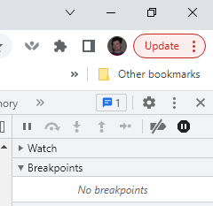
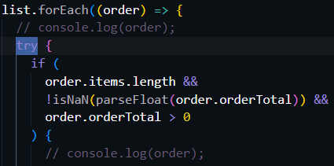
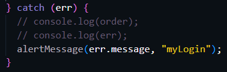
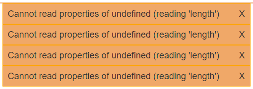

Example #1 Evidence
Google's Exception Breakpoint Tool
Example #2 Link
JavaScript
JavaScript

Debugging
5. finding and troubleshooting bugs you and others will have in the code you write
(Student writes code that is free from syntax and logical errors. Student is adept with the developer tools built into each browser. (Breakpoints, stepping through and inspecting code, using the element/css inspector, console, etc...) Student is able to successfully set up try/catch blocks in their code to handle potential runtime errors.)
I always work to get my code clean and run tests on it to make sure it is good. I like to use browser development tools to help with that. I think I was okay at debugging before taking this class, but I have had a lot of practice now at debugging. I use console.log, breakpoints and try catch blocks to help resolve issues that come up. I have also learned it is good to do a little bit of coding and then check it along te way as you go, instead of doing a whole bunch and the finding an error and having to go back through a bunch of changes to find the issue.
Example #1
The first example I have of using debugging tools is a new tool that I have discovered in Google development tools. There is a button that looks like a stop sign in the upper right-hand corner that if you click it puts pauses on exceptions in the code. That is a very handy tool, it automatically stops the code in the area the problem is occuring.
Example #2
The second example of me troubleshooting bugs is in the admin feature that we worked on. Our team used try/catch blocks and console.log statements to find and stop bad orders from coming into our order list. I ended up sending the error messages to the top of the screen so we would know how many orders were faulty and why.